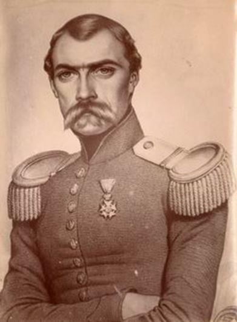
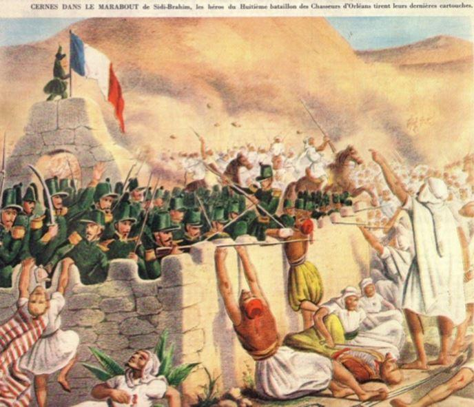
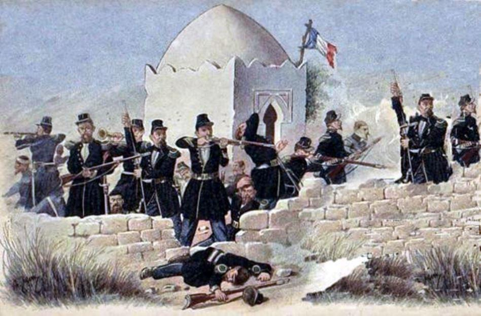
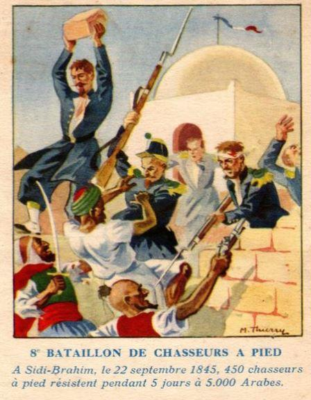
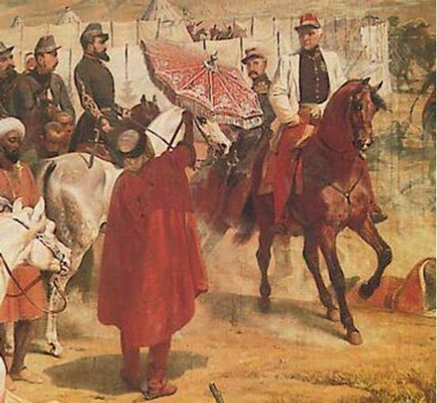

Après la destruction de sa smala (16 mai 1843) par le duc d’Aumale, l’émir Abd el-Kader se réfugia au Maroc d’où il lança un nouvel appel à la guerre sainte contre les troupes françaises installées en Algérie.
Au mois de septembre 1845, il entreprit de franchir la frontière et effectua avec l’aide des populations fanatisées de sanglantes insurrections qui, sous l’influence des passions religieuses, se propagèrent sur tout le territoire algérien.
La garnison française la plus proche de la frontière algéro-marocaine, celle de Djemmâa Ghazaouet (appelé, plus tard, Nemours), forte de 600 hommes, était commandée par le lieutenant-colonel de Montagnac, soldat fougueux, violent, aventureux, mais fort courageux.
Le 19 septembre 1845, un chef de tente de la tribu des Souhalia (que l’on croyait fidèle), le caïd Trari, vint, insidieusement, avertir Montagnac de la présence d’Abd el-Kader dans sa tribu dans le but de provoquer un soulèvement et demander, par conséquent, l’aide et la protection de l’armée française.
Sans prendre le temps d’apprécier si le danger couru par la tribu était réel ou, s’il s’agissait d’un piège tendu par l’émir, Montagnac –contrairement aux instructions des généraux Lamoricière et Cavaignac qui lui enjoignaient de na pas s’aventurer en rase campagne avec un effectif aussi réduit que le sien- prit la décision de former une force expéditionnaire afin de s’opposer à la violation du territoire par l’émir.
Le 21 septembre, à 22 heures, à la tête de cinq compagnies du 8ème bataillon de Chasseurs d’Orléans, sous les ordres du chef de bataillon Froment-Coste, d’un escadron du 2ème Hussards, commandé par le capitaine Gentil de Saint-Alphonse et de quatre escouades de carabiniers commandées par le capitaine Burgard, soit 421 hommes, Montagnac se porta au-devant d’Abd el-Kader.
Le 22 septembre, arrivé aux abords de l’oued Sidi-Brahim, l’officier décida d’établir son campement. Aussitôt, et durant toute la nuit, des coups de feu furent échangés avec des cavaliers arabes.
Le 23 septembre, à six heures du matin, Montagnac refusant l’enlisement, décida de charger et de réduire l’ennemi. Laissant le bivouac à la garde du commandant Froment-Coste avec deux compagnies, il partit, en tête des hussards, suivi de trois compagnies de chasseurs. Parvenus au pied du Kerkour, à trois kilomètres du bivouac, les hussards chargèrent une centaine de cavaliers qui, aussitôt, se retirèrent, entraînant de plus en plus loin la charge… et les chasseurs à pied exténués par leur course poursuite. Soudain, un millier de cavaliers arabes cachés jusque-là derrière un pli de terrain, surgirent et, dans un déluge de feu, sous le regard d’Abd el-Kader en personne, se ruèrent sur l’avant-garde française complètement désorientée.
Très vite la plupart des officiers furent mis hors de combat y compris le lieutenant-colonel de Montagnac atteint d’une balle au bas-ventre. Pendant ce temps, les trois compagnies de chasseurs, épuisées par l’effort fourni pour tenter de rattraper l’escadron, étaient assaillies par des milliers de fantassins et de cavaliers. La mêlée était indescriptible, sauvage, impitoyable, sans merci.
On frappa, on perça : Les soldats français de leur baïonnette, les cavaliers arabes de leur lance et de leur sabre.
On trancha, on brisa, on mutila, on acheva. Le sang giclait de partout, ruisselait abondamment, aveugle. Des blessés étaient piétinés par les chevaux, d’autres se redressaient péniblement, hagards et ensanglantés, ils étaient aussitôt décapités pour la plupart. Les chasseurs étaient pris au piège, sans le moindre espoir de salut. En quelques minutes, leur carré fut anéanti. La résistance à l’ennemi fut sublime, mais le carnage épouvantable.
Averti par une estafette, le commandant Froment-Coste accourut avec une compagnie de chasseurs et une section de carabiniers, ayant laissé le camp à la garde du capitaine de Géreaux, à la tête de la seconde compagnie de carabiniers.
Arrivé sur le théâtre des opérations, le détachement fut aussitôt assailli par un ennemi trente fois plus nombreux et enivré de sang. Ce fut un massacre. Le commandant Froment-Coste et le capitaine Burgard furent tués ; le capitaine Dutertre, grièvement blessé, fut fait prisonnier. Seuls, deux chasseurs réussiront, de nuit, à s’extirper d’un amoncellement de corps atrocement mutilés et rejoindre une colonne française.
Survivants de ce carnage, les quatre-vingt-deux carabiniers du capitaine de Géreaux demeurés au bivouac, firent retraite sur le marabout de Sidi-Brahim d’où, abrités par des murs de pierres sèches et de pisé, ils allaient pouvoir organiser plus efficacement leur défense.
De nouveau une horde hurlante –toujours sous le regard attentif de l’émir- se rua sur les défenseurs du fortin mais, cette fois, des coupes sombres éclaircirent les rangs des assaillants. Vainement, Abd el-Kader envoya des parlementaires pour obtenir la reddition des carabiniers. Alors, contre toutes les lois de la guerre, il présenta aux insurgés, le capitaine Dutertre, ensanglanté mais vivant. Celui-ci avait été prévenu que s’il ne parvenait pas à décider ses compatriotes à se rendre, il serait exécuté sur place. Le carabinier Tressy, l’un des rares rescapés de ce désastre racontera plus tard : « Entouré de six arabes, le capitaine est très pâle. A l’invite de ses gardiens, il refuse d’abord de parler puis, un pistolet braqué sur la tête, il crie d’une voix affaiblie : « Camarades, Abd el-Kader m’envoie vous demander de vous rendre… Mais moi, je vous engage à résister et à vous défendre jusqu’à la mort. Vive la France ! ».
A peine eut-il parlé, qu’il fut abattu de deux coups de pistolet tirés à bout portant. Son corps entraîné un peu plus loin, fut décapité. Le bourreau prit aussitôt la tête par les cheveux et vint la montrer aux défenseurs du marabout. Il éleva le sanglant trophée en ricanant. Cet affreux spectacle fit frémir de rage les carabiniers : quatre coups de fusil partirent en même temps, et le fanatique tomba, foudroyé, lâchant la tête ensanglantée du capitaine qui roula sur le sol. Croyant alors les assiégés découragés et abattus, Abd el-Kader ordonna au clairon français prisonnier, Guillaume Rolland, de sonner la retraite, celui-ci n'en fit rien et sonna, au contraire, la charge.
Durant quarante-huit heures, les défenseurs du fortin résistèrent aux multiples assauts. Sans eau, sans nourriture et les munitions s’épuisant, la situation devenait tragique. Conscient de la fin inéluctable qui serait la leur s’ils demeuraient dans cette position, le 26 septembre, avant l’aube, le capitaine de Géreaux et le lieutenant Chappedelaine, son second, décidèrent de tenter une sortie dans le but de rejoindre Djemmâa-Ghazaouet. Bénéficiant de la surprise, avec leurs hommes ils se projetèrent hors de l’enceinte et culbutèrent les premières lignes d’assaillants pour la plupart endormis. Vers 9 heures du matin, après une marche épuisante et de multiples harcèlements qui furent fatals au lieutenant Chappedelaine, ils atteignirent l’oued El Mersa.
Là, ils se heurtèrent à une meute hurlante accourue des douars voisins pour la curée. Assoiffés, affamés, épuisés, sans munition, les soldats français combattirent avec bravoure à l’arme blanche. La lutte, bien qu’inégale, se montra inhumaine, féroce. Les hommes s’aggloméraient, se liant entre eux, s’embrassant et se perçant, l’œil dans l’œil, avec des petits cris d’animaux ivres, en roulant peu à peu dans la poussière. Ceux qui devaient là mourir tombèrent. Ceux qui devaient trouver là de l’honneur s’y montrèrent soudain grandis. Les mains entrèrent à leur tour dans la chair vive. Il se donna dans cette lutte, des coups de dents et de griffes à épouvanter la jungle indienne.
De piton en piton, de crête en crête, la voix de la montagne emportait l’horrible fracas des armes, des hurlements sauvages, des cris inhumains, des plaintes, et on imaginait aisément ce que pouvait être ce corps à corps où nul ne faisait de quartier. Ô combat héroïque qu’eût chanté Homère et qui restera obscur et ignoré, comme tant d’autres de ces combats qui auront marqué la conquête de l’Algérie !
A un contre cent, ils vendirent cher leur vie, ces hommes jeunes ou ces vieux guerriers, tous braves et vigoureux. Et alors que leur capitaine, atteint de plusieurs coups de yatagan (sabre turc à lame recourbée vers la pointe) avait succombé et qu’ils étaient sur le point de succomber sous le nombre, trois coups de canon partis du poste de Djemmâa, distant de 2700 mètres seulement, jetèrent le trouble chez les arabes qui s’enfuirent emmenant avec eux une quinzaine de prisonniers. Huit hommes seulement échappèrent au massacre et atteignirent l’entrée du poste.
Sur la tragédie de Sidi-Brahim, Alexandre Dumas écrira en hommage à ceux qui firent le sacrifice de leur vie : « Un jour, on oubliera les détails de ce magnifique combat que nous pouvons opposer à tout ce que l’Antiquité nous a légué d’héroïque et de grand !... Jetons une page de plus à ce vent qui roulait les feuilles de la Sibylle de Cumes et qui emporte toute chose humaine vers l’obscurité, le néant et l’oubli ».
Dans la nuit du 26 au 27 avril 1846, sept mois après leur capture, le cousin d’Abd el-Kader, Mustapha ben Thami, fit égorger les soldats français faits prisonniers lors de cette bataille.
Dès lors, l’armée française conduite par le Maréchal Bugeaud, n’eut de cesse de traquer l’émir et de réduire le soulèvement des tribus fanatisées au djihad. Acculé à la fuite perpétuelle, abandonné par les tribus les plus fidèles, le 18 juillet 1846, Abd el-Kader se réfugia pour la seconde fois au Maroc d’où il ne put reconstruire une armée, se heurtant même à l’hostilité du Sultan.
Le 23 décembre 1847, l’émir se décida à revenir en Algérie où il demanda l’aman (faire sa soumission) au colonel de Montauban représentant le général Lamoricière, à Sidi-Brahim, là, précisément, où il avait remporté une de ses plus grandes et plus cruelles victoires et fut exilé, à la demande de Louis-Philippe, à Pau puis au château d’Amboise.
Le 5 janvier 1848, Victor Hugo écrivait : « Abd el-Kader a rendu son sabre au général Lamoricière dans le même marabout de Sidi-Brahim où se fit, en septembre 1845, la boucherie de Djemâa-Ghazouet. Lugubre victoire qu’il est venu expier au même lieu, deux ans après, comme si la Providence l’y ramenait par la main ».
L’émir fut libéré en 1852 par Napoléon III qui le reçut à Saint-Cloud et le fit acclamer à Paris, à la veille de son départ pour Damas où il mourut en 1883, grand-croix de la Légion d’honneur. C’est une habitude de la France que d’honorer l’ennemi d’hier… même quand il a les mains tâchées de sang français.
Partager cette page